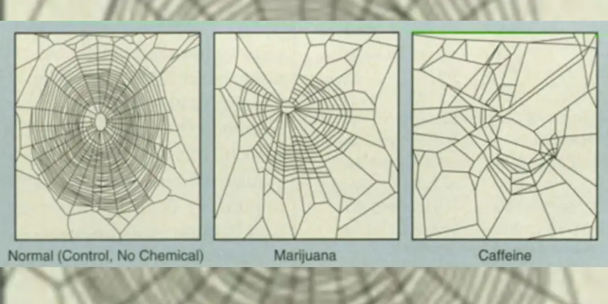
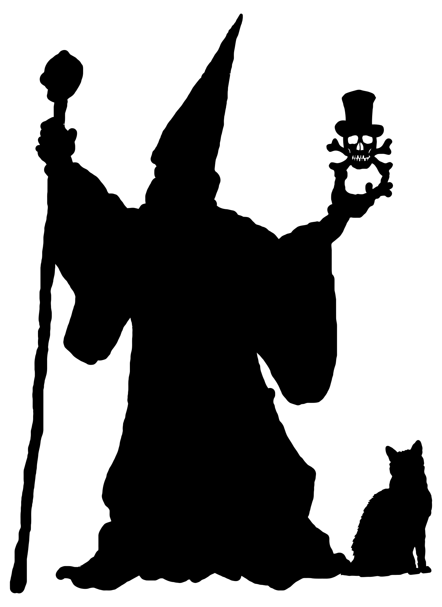
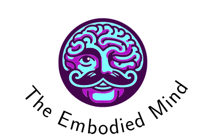
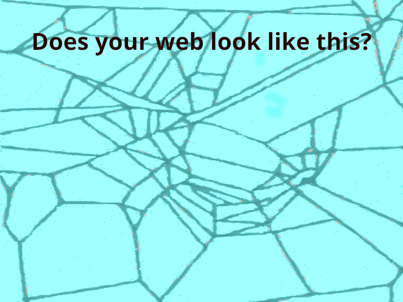
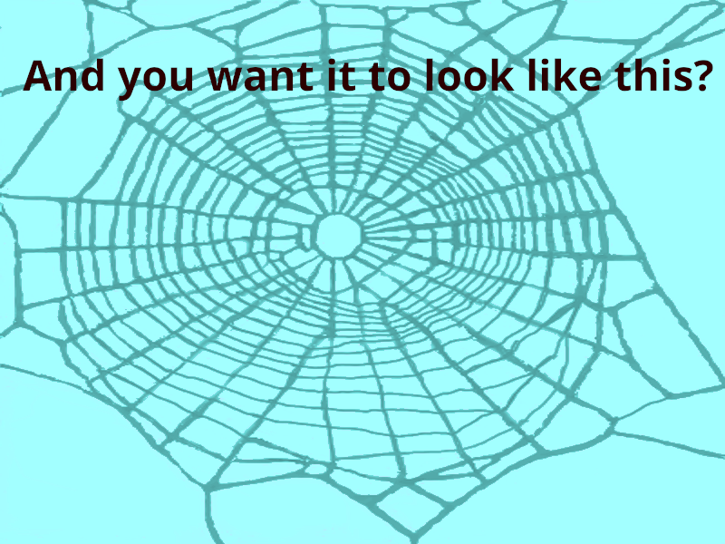
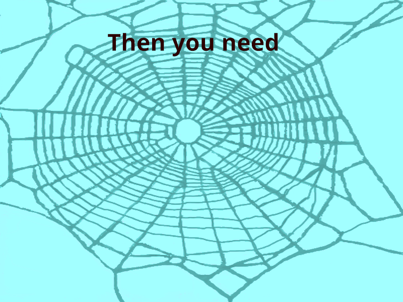

Visual Design and Web Project Assignment 1 - Image 6
Objective
Produce a web optimised animated image advertising the Web Witchcraft and Wizardry web site.
The Process
The web images were taken from an image published by NASA in a technical briefing “Using Spider-Web Patterns To Determine Toxicity.” (April 1995)

This was first cropped to extract the control and caffeine webs which were saves as JPEG files. These were then converted to vector format using Inkscape, to trace the bitmap. Unfortunately, the contrast between the web and the background was low (especially in the control web) so these SVG files were imported into Krita and manually traced to remove the background and colour transformed to make the web strands dark gray.
The witch and wizard images were SVG files taken from OpenClipart-Vectors on pixabay.com and are used in the website to give a connection to the theme of Web Witchcraft and Wizardry.

These were edited in Inkscape to remove parts of the images which were not needed for the animation (the wizard's cat and the border surrounding the witch) and saved as SVG files.
The embodied mind logo used in the final frame was the one created as image 1, although converted to PNG format as Krita pixelated the SVG on import to an unacceptable level. This needs further investigation as it suggests the SVG is not a true vector image, although time constraints mean this is not feasible at the moment.

The colour and typography of the text used was taken from the website (Open Sans for the san serif text and Cinzano Decorative for the site name), again giving a connection to the theme of Web Witchcraft and Wizardry. The opacity of the web was reduced when the central text was displayed to ensure readability and the text was emphasised with subtle inner glow and shadow effects
The animation was created by compositing the images and text in Krita, and exporting each frame as a PNG file.




The frames were then composited into an animation using ffmpeg, and exported in MP4, WEBP and GIF formats. This was done with a shell script to make the process more repeatable. All three formats were generated as it was unclear, a priori, which format would produce the smallest file size. (Spoiler alert: it was MP4).
#!/bin/bash
# Create animated WEBP and GIF from 8 layers with fades
# All fades are 3 seconds at 24fps = 72 frames
# Run from the artwork folder to ensure correct paths
# Colours for output
RED='\033[0;31m'
GREEN='\033[0;32m'
CYAN='\033[0;36m'
YELLOW='\033[1;33m'
NC='\033[0m' # No Colour
if [ $# -eq 0 ]; then
echo -e "${RED}Error: Please provide a filename${NC}"
echo "Usage: $0 filebasename outputFolder"
echo "Example: $0 source/image-6/animated-web generated"
exit 1
fi
BASENAME="$1"
INPUT_FOLDER=$(dirname "$BASENAME")
FILEBASE=$(basename "$BASENAME")
OUTPUT_FOLDER="${2:-generated}"
# Check if required images exist
REQUIRED_LAYERS=(
"${INPUT_FOLDER}/${FILEBASE}-1.png"
"${INPUT_FOLDER}/${FILEBASE}-2.png"
"${INPUT_FOLDER}/${FILEBASE}-3.png"
"${INPUT_FOLDER}/${FILEBASE}-4.png"
"${INPUT_FOLDER}/${FILEBASE}-5.png"
)
echo -e "${CYAN}Checking for required layer images...${NC}"
MISSING=0
for layer in "${REQUIRED_LAYERS[@]}"; do
if [ ! -f "$layer" ]; then
echo -e "${RED}Missing: $layer${NC}"
MISSING=1
else
echo -e "${GREEN}✓ Found: $layer${NC}"
fi
done
if [ $MISSING -eq 1 ]; then
echo -e "${YELLOW}"
echo "Please export your 6 layers from Krita as PNG files"
echo ""
echo "All images should be 800x600px with transparent backgrounds where needed."
echo -e "${NC}"
exit 1
fi
echo ""
echo -e "${GREEN}All layers found! Creating animation...${NC}"
echo ""
# Animation parameters
WIDTH=800
HEIGHT=600
FPS=24
FADE_FRAMES=72 # 3 seconds at 24fps
# Create black background
echo -e "${CYAN}Creating base images...${NC}"
ffmpeg -f lavfi -i color=c=black:s=${WIDTH}x${HEIGHT}:d=1 -frames:v 1 -y blank.png 2>/dev/null
if [ $? -ne 0 ]; then
echo -e "${RED}Error: Failed to create blank image${NC}"
exit 1
fi
echo -e "${GREEN}✓ Base images created${NC}"
echo ""
# Define layer file paths
LAYER1="${INPUT_FOLDER}/${FILEBASE}-1.png"
LAYER2="${INPUT_FOLDER}/${FILEBASE}-2.png"
LAYER3="${INPUT_FOLDER}/${FILEBASE}-3.png"
LAYER4="${INPUT_FOLDER}/${FILEBASE}-4.png"
LAYER5="${INPUT_FOLDER}/${FILEBASE}-5.png"
# Filter for the entire animation sequence
# Using timeline in seconds for easier reading
echo -e "${CYAN}Building animation timeline...${NC}"
# Calculate segment durations (all fades are 3 seconds)
FADE_DUR=3
HOLD_DUR=0 # Time to hold each state (adjust if needed)
# Build ffmpeg filter
cat > filter_complex.txt << 'FILTER_EOF'
# Input mapping:
# [0:v] = blank.png
# [1:v] = layer1.png
# [2:v] = layer2.png
# [3:v] = layer3.png
# [4:v] = layer4.png
# [5:v] = layer5.png
# Segment 1: Fade in layer 1 from blank (0-3s)
[0:v][1:v]blend=all_expr='A*(1-T/3)+B*(T/3)':shortest=1,trim=duration=3[seg1];
# Segment 2: Fade from layer 1 to layer 2 (3-6s)
[1:v][2:v]blend=all_expr='A*(1-T/3)+B*(T/3)':shortest=1,trim=duration=3[seg2];
# Segment 3: Show layer 2 (6-9s)
[2:v]trim=duration=3[seg3];
# Segment 4: Show layer 3 (no fade) (9-12s)
[3:v]trim=duration=3[seg4];
# Segment 5: Fade from layer 3 to layer 4 (12-15s)
[3:v][4:v]blend=all_expr='A*(1-T/3)+B*(T/3)':shortest=1,trim=duration=3[seg5];
# Segment 6: Show layer 4 (15-18s)
[4:v]trim=duration=3[seg6];
# Segment 7: Show layer 5 (18-21s)
[5:v]trim=duration=3[seg7];
# Concatenate all segments
[seg1][seg2][seg3][seg4][seg5][seg6][seg7]concat=n=7:v=1:a=0[out]
FILTER_EOF
echo -e "${GREEN}Animation plan:${NC}"
echo " 0-3s: Fade from blank to layer 1"
echo " 3-6s: Fade from layer 1 to layer 2"
echo " 6-9s: Show layer 2"
echo " 9-12s: Show layer 3 (no fade)"
echo " 12-15s: Fade from layer 3 to layer 4"
echo " 15-18s: Show layer 4"
echo " 18-21s: Show layer 5"
echo " Total: 21 seconds"
echo ""
# Create video first, then convert
echo -e "${CYAN}Step 1: Creating MP4 video...${NC}"
ffmpeg -loop 1 -t 3 -i blank.png \
-loop 1 -t 21 -i "$LAYER1" \
-loop 1 -t 21 -i "$LAYER2" \
-loop 1 -t 21 -i "$LAYER3" \
-loop 1 -t 21 -i "$LAYER4" \
-loop 1 -t 21 -i "$LAYER5" \
-filter_complex_script filter_complex.txt \
-map "[out]" \
-r ${FPS} \
-pix_fmt yuva420p \
-c:v libx264 \
-y ${FILEBASE}.mp4
if [ $? -ne 0 ]; then
echo -e "${RED}Filter complex method failed. Trying simpler approach...${NC}"
# sequential approach
echo -e "${CYAN}Using sequential composition method...${NC}"
# Create each segment separately
# Segment 1: Fade from blank to layer 1
ffmpeg -loop 1 -t 3 -i blank.png -loop 1 -t 3 -i "$LAYER1" \
-filter_complex "[0:v][1:v]blend=all_expr='A*(1-T/3)+B*(T/3)':shortest=1" \
-r ${FPS} -y seg1.mp4
# Segment 2: Fade from layer 1 to layer 2
ffmpeg -loop 1 -t 3 -i "$LAYER1" -loop 1 -t 3 -i "$LAYER2" \
-filter_complex "[0:v][1:v]blend=all_expr='A*(1-T/3)+B*(T/3)':shortest=1" \
-r ${FPS} -y seg2.mp4
# Segment 3: Show layer 2
ffmpeg -loop 1 -t 3 -i "$LAYER2" -r ${FPS} -y seg3.mp4
# Segment 4: Show layer 3 (no fade)
ffmpeg -loop 1 -t 3 -i "$LAYER3" -r ${FPS} -y seg4.mp4
# Segment 5: Fade from layer 3 to layer 4
ffmpeg -loop 1 -t 3 -i "$LAYER3" -loop 1 -t 3 -i "$LAYER4" \
-filter_complex "[0:v][1:v]blend=all_expr='A*(1-T/3)+B*(T/3)':shortest=1" \
-r ${FPS} -y seg5.mp4
# Segment 6: Show layer 4
ffmpeg -loop 1 -t 3 -i "$LAYER4" -r ${FPS} -y seg6.mp4
# Segment 7: Show layer 5
ffmpeg -loop 1 -t 3 -i "$LAYER5" -r ${FPS} -y seg7.mp4
# Concatenate all segments
echo "file 'seg1.mp4'" > concat_list.txt
echo "file 'seg2.mp4'" >> concat_list.txt
echo "file 'seg3.mp4'" >> concat_list.txt
echo "file 'seg4.mp4'" >> concat_list.txt
echo "file 'seg5.mp4'" >> concat_list.txt
echo "file 'seg6.mp4'" >> concat_list.txt
echo "file 'seg7.mp4'" >> concat_list.txt
ffmpeg -f concat -safe 0 -i concat_list.txt -c copy -y ${FILEBASE}.mp4
fi
if [ ! -f ${FILEBASE}.mp4 ]; then
echo -e "${RED}Error: Failed to create video${NC}"
exit 1
fi
VIDEO_SIZE=$(du -h ${FILEBASE}.mp4 | cut -f1)
echo -e "${GREEN}✓ Video created: ${FILEBASE}.mp4 ($VIDEO_SIZE)${NC}"
echo ""
# Convert to WEBP
echo -e "${CYAN}Step 2: Converting to WEBP...${NC}"
ffmpeg -i ${FILEBASE}.mp4 -c:v libwebp -lossless 0 -compression_level 6 -quality 75 -loop 1 -y ${FILEBASE}.webp 2>/dev/null
if [ -f ${FILEBASE}.webp ]; then
WEBP_SIZE=$(du -h ${FILEBASE}.webp | cut -f1)
echo -e "${GREEN}✓ WEBP created: ${FILEBASE}.webp ($WEBP_SIZE)${NC}"
else
echo -e "${YELLOW}⚠ WEBP creation failed${NC}"
fi
echo ""
# Convert to GIF with palette (reduce fps for smaller file size)
GIF_FPS=10
echo -e "${CYAN}Step 3: Converting to GIF at ${GIF_FPS}fps (single-pass method)...${NC}"
# First re-encode the video with consistent frame timing to avoid dropping initial frames
ffmpeg -i ${FILEBASE}.mp4 -vf fps=fps=${FPS} -pix_fmt yuv420p -y ${FILEBASE}-temp.mp4 2>/dev/null
# Then convert to GIF with tpad to ensure the first frame is captured
ffmpeg -i ${FILEBASE}-temp.mp4 -vf "tpad=start_duration=0.1:start_mode=clone,fps=fps=${GIF_FPS}:start_time=0,scale=${WIDTH}:${HEIGHT}:flags=lanczos,split[s0][s1];[s0]palettegen[p];[s1][p]paletteuse" -loop -1 -y ${FILEBASE}.gif 2>/dev/null
# Clean up temp file
rm -f ${FILEBASE}-temp.mp4
if [ -f ${FILEBASE}.gif ]; then
GIF_SIZE=$(du -h ${FILEBASE}.gif | cut -f1)
echo -e "${GREEN}✓ GIF created: ${FILEBASE}.gif ($GIF_SIZE)${NC}"
else
echo -e "${YELLOW}⚠ GIF creation failed${NC}"
fi
echo ""
echo -e "${GREEN}════════════════════════════════════════${NC}"
echo -e "${GREEN}Animation creation complete!${NC}"
echo -e "${GREEN}════════════════════════════════════════${NC}"
echo ""
echo "Output files:"
[ -f ${FILEBASE}.mp4 ] && echo " • ${FILEBASE}.mp4 ($(du -h ${FILEBASE}.mp4 | cut -f1))"
[ -f ${FILEBASE}.webp ] && echo " • ${FILEBASE}.webp ($(du -h ${FILEBASE}.webp | cut -f1))"
[ -f ${FILEBASE}.gif ] && echo " • ${FILEBASE}.gif ($(du -h ${FILEBASE}.gif | cut -f1))"
echo ""
mkdir -p "$OUTPUT_FOLDER"
mv "${FILEBASE}.mp4" "$OUTPUT_FOLDER"
mv "${FILEBASE}.webp" "$OUTPUT_FOLDER"
mv "${FILEBASE}.gif" "$OUTPUT_FOLDER"
echo -e "${GREEN}✓ Moved ${FILEBASE}.mp4, ${FILEBASE}.webp, and ${FILEBASE}.gif to $OUTPUT_FOLDER/${NC}"
# Cleanup
echo -e "${CYAN}Cleaning up temporary files...${NC}"
rm -f blank.png seg*.mp4 concat_list.txt filter_complex.txt
echo -e "${GREEN}✓ Cleanup complete${NC}"
The Krita file can be viewed here.